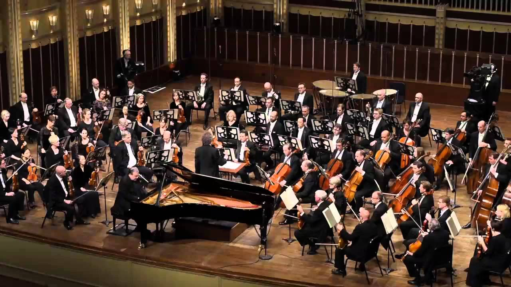

Growing Between Two Cultures
Born in Japan, I spent my childhood between Ōta and Tokyo before moving to France at the age of ten. Growing up in two different countries gave me the opportunity to experience distinct cultures from an early age.
Throughout these years, I also travelled extensively across Asia, including China, Thailand, the Philippines, India, and Vietnam. These experiences encouraged curiosity, openness, and adaptability to different environments and ways of thinking.
Living between Japanese and French cultures helped me develop a broader perspective. While Japanese culture taught me respect, observation, discipline, and attention to others, French culture encouraged self-expression, critical thinking, and confidence in sharing my ideas.
Dance : Discipline and Connection
I first discovered classical dance in Japan with my sister. Later, during my final years in engineering school in France, I was introduced to social dancing by my mother and sister, learning salsa, bachata, kizomba, and rock.
Beyond the technical aspects of rhythm, coordination, and movement, dance became a way to connect with others. It taught me to communicate, adapt, and build confidence through non-verbal interaction.
While classical dance developed rigor, precision, and discipline, social dancing strengthened my communication skills, adaptability, and ability to connect with people from diverse backgrounds.
Competitive Basketball
I first practiced basketball in Japan and then continued in France, playing competitively for six years in a club competing in the Regional 1 division of the Auvergne-Rhône-Alpes league.
I played for Étoiles de Chamalières, where I learned the importance of contributing to a collective project, the value of hard work, and the discipline of repeatedly practicing specific skills during training, such as developing an efficient mid-range shot.
Above all, basketball taught me how to perform under pressure, play in front of large audiences, and communicate effectively with my teammates in all situations.
Through competition, I developed teamwork, perseverance, adaptability and a strong sense of responsibility toward a common goal.

Piano: Precision and Improvisation
During my childhood in Japan, I learned classical piano through a rigorous approach focused on technique, interpretation, and respect for the composer's intentions. Each year, I performed in front of large audiences, which helped me develop confidence and learn how to manage pressure in demanding situations.
After moving to France, I discovered jazz and was immediately drawn to its freedom and collaborative nature. Beyond the music itself, jazz introduced me to improvisation and interaction with other musicians, where listening and adaptation are as important as technical skills.
While classical piano taught me discipline, precision, and perseverance, jazz piano developed creativity, adaptability, and the ability to communicate and build something collectively through music.